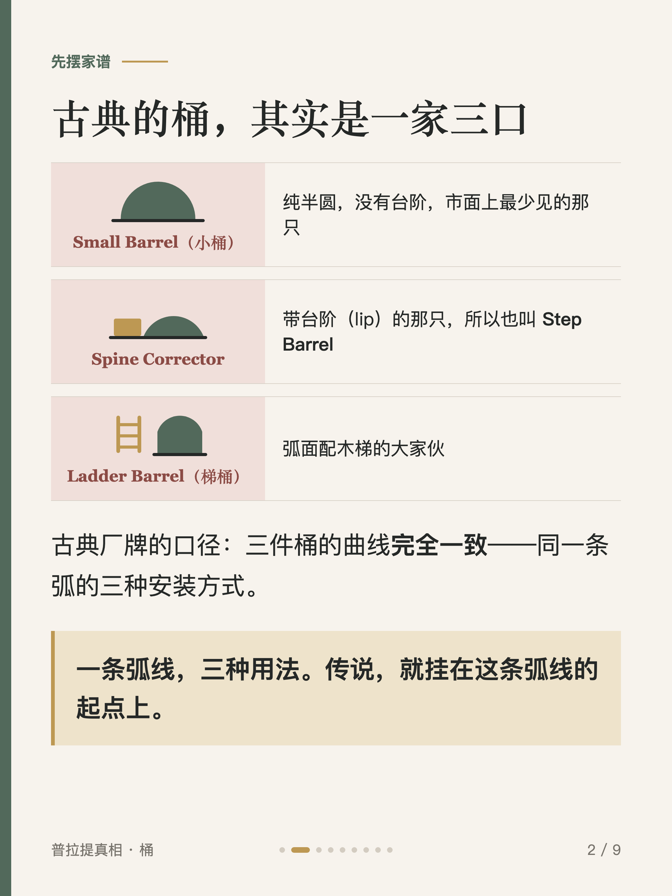
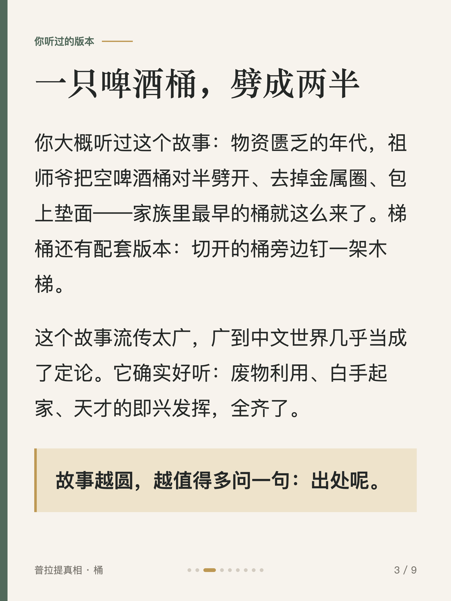
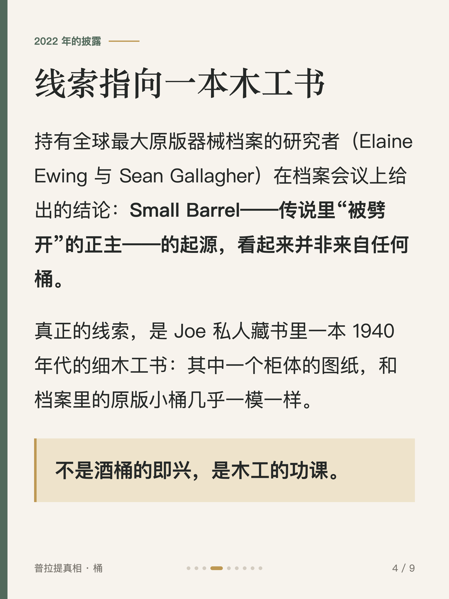
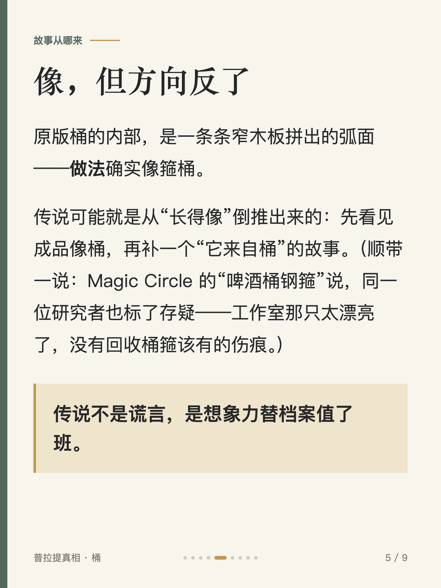
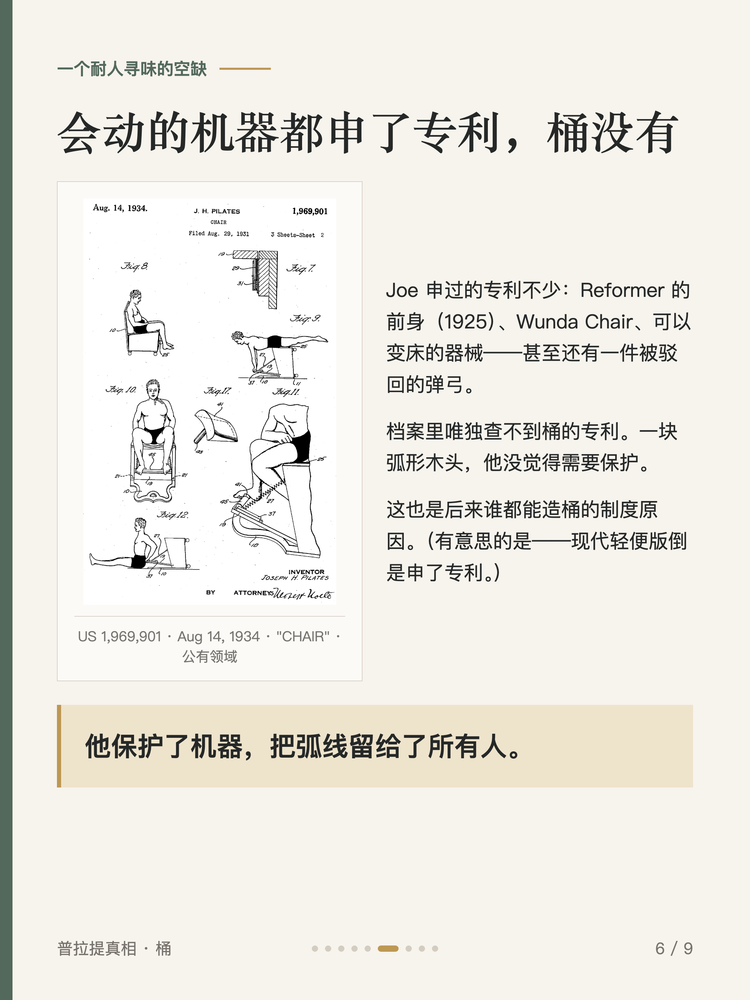
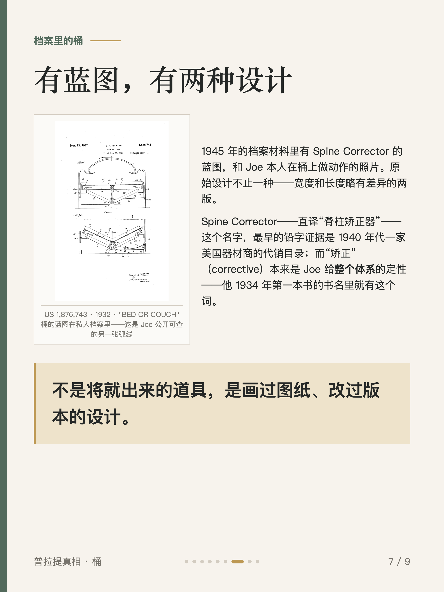
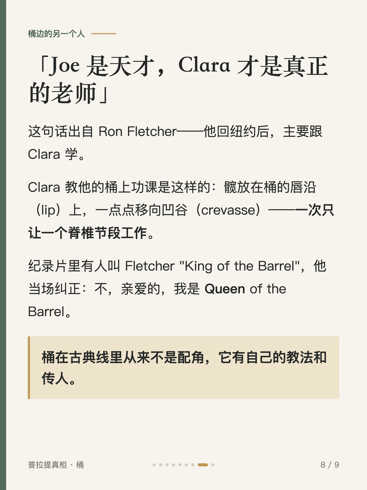
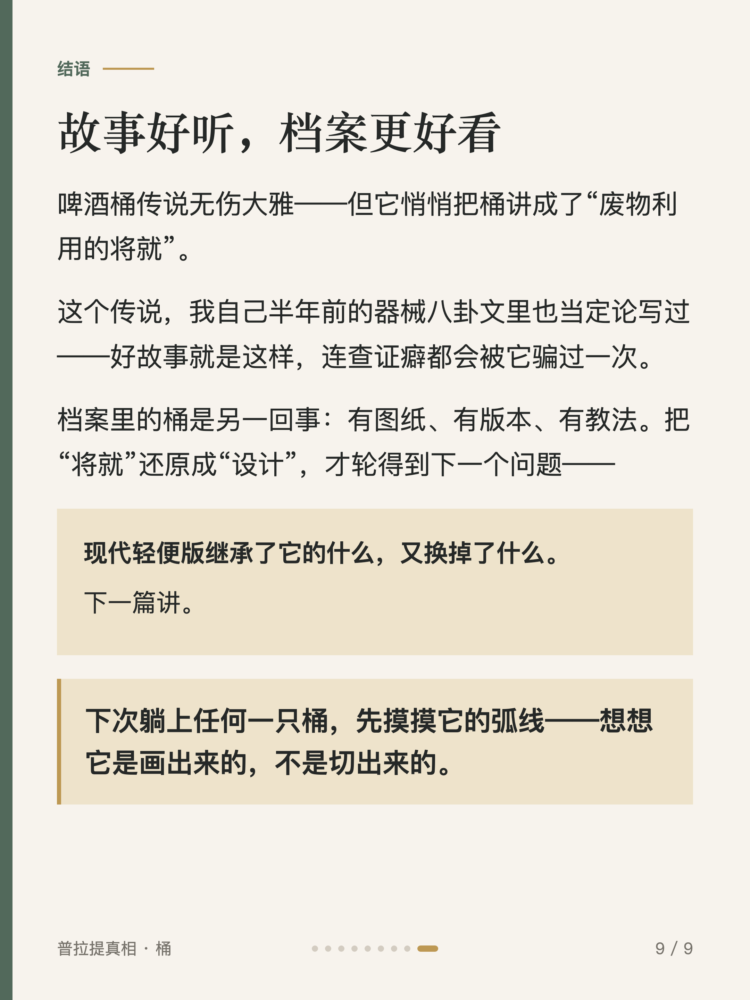

普拉提真相 #007
桶的起源：啤酒桶传说，查无实据

1 / 9

2 / 9

3 / 9

4 / 9

5 / 9

6 / 9

7 / 9

8 / 9

9 / 9
← 左右滑动浏览全部卡片 →
你大概也听过那个故事：祖师爷把啤酒桶劈成两半，做出了古典桶家族最早的那只。这个故事太好听了，好听到没人去问出处。持有原版器械档案的研究者查过：查无实据——真正的线索是 Joe 私人藏书里一本 1940 年代的木工书，里面一个柜体的图纸和档案里的原版桶几乎一模一样。
顺着传说往下挖：桶有 1945 年的蓝图、有两种原始设计；Joe 给会动的机器都申了专利，唯独没申桶。它从来不是废物利用的将就——是画过图纸的设计。历史细节均注明来源，个别口述类标注存疑。